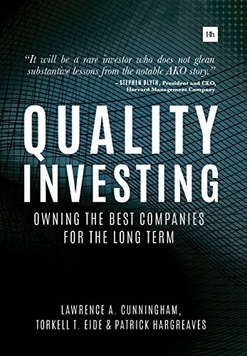

劳伦斯·坎宁安（Lawrence A. Cunningham）因编辑《巴菲特致股东的信》而为投资读者熟悉，也长期研究公司治理。托克尔·艾德（Torkell T. Eide）与帕特里克·哈格里夫斯（Patrick Hargreaves）则是伦敦AKO Capital的基金经理：艾德曾在麦肯锡和挪威SKAGEN基金任职，哈格里夫斯加入AKO前在高盛从事欧洲股票研究。三人的分工很清楚——两位基金经理提供AKO在欧洲股票中形成的研究框架和案例，坎宁安负责把内部方法整理成书。《Quality Investing: Owning the Best Companies for the Long Term》由Harriman House于2016年1月出版，正文约224页；它最初带有培训新分析师的手册性质，因此章节按“构件、模式、陷阱、实施”推进，而非按行业罗列股票。
三位作者把"质量"拆解为三项可辨识的特征：强劲且可预测的现金生成能力、持续偏高的资本回报率，以及充足的增长机会——三者叠加会形成一种自我强化的再投资循环。围绕这一核心，全书搭建了七块"构件"：资本配置、资本回报、增长的多重来源、管理层素质、行业结构、客户利益与竞争优势，随后又归纳出十二种反复出现的"模式"，包括经常性收入、友善的中间商、收费公路式业务、低价加成、定价权、品牌力、创新主导、前向整合、市场份额扩张者、全球化能力与领导地位、企业文化，以及难以复制的成本壁垒。书中案例几乎全部取自AKO Capital实际持有或研究过的欧洲公司，如欧莱雅（L'Oréal）、帝亚吉欧（Diageo）、亚萨合莱（Assa Abloy）、联合利华（Unilever）、爱马仕（Hermès）、劳斯莱斯（Rolls-Royce）、瑞安航空（Ryanair）、露诺（Luxottica）、耐克与诺和诺德（Novo Nordisk），每则案例通常不足一页，只讲一家公司如何体现某种特质。书中也不回避失败：意大利钻井承包商Saipem、英国零售商乐购（Tesco）与诺基亚（Nokia）被当作"看似优质实则脆弱"的反例——它们的衰落分别源于周期性繁荣被误读为结构性增长、消费习惯迁移，以及技术领先地位被颠覆。作者还引用一项研究指出，获得媒体奖项的"明星CEO"此后的业绩往往不及获奖前、也不及未获奖同行，提醒投资者对管理层的公众声誉保持警惕。
哈佛大学捐赠基金管理公司（Harvard Management Company）时任总裁兼首席执行官史蒂芬·布莱斯（Stephen Blyth）为本书作序，原文写道：“Investing is a continuous process of learning, and it will be a rare investor who does not glean substantive lessons from the notable AKO story of quality investing.”宾夕法尼亚大学首席投资官彼得·阿蒙（Peter H. Ammon）评价：“Capturing both the science and the art that have driven AKO’s success, Quality Investing is equal parts investing handbook and ode to the beauty of truly great businesses.”马拉松资产管理公司（Marathon Asset Management）创始人尼尔·奥斯特（Neil Ostrer）则称其为一套长期投资策略的“clear and rigorous analysis”。据AKO Capital官网介绍，本书自2016年出版以来销量超过2.6万册，并被译为普通话、西班牙语、泰语和越南语；目前未查到可确认的正式中文书名，因此这里采用自然译名《质量投资：长期拥有最优质的公司》。
书中并未回避技术：Google被用来说明数据和算法形成的优势，诺基亚则说明技术领先也可能迅速消失。不过，案例的主体确实是消费品、工业和医药公司，因为它们的客户行为、分销渠道与资本需求更容易用多年数据检验。作者先问一家公司能否长期保持高增量资本回报，再讨论行业供给、客户利益和竞争者复制成本；仅凭品牌知名度或一段漂亮的历史利润率，并不能通过这套筛选。全书最明显的空白是估值：它详细解释“什么是好公司”，却没有公开AKO如何把质量转换成可接受的买入价格。读者因此可以把七项构件和十二种模式用作商业质量清单，但仍需另行估算增长、资本回报衰减和买入价之间的关系。